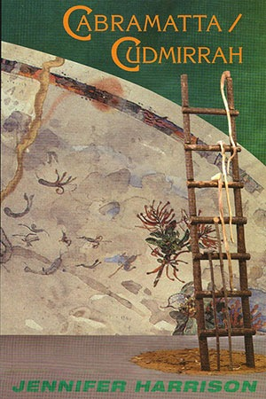

Cabramatta / Cudmirrah
Jennifer Harrison

Description
Cabramatta/Cudmirrah is an intense meditation on desire, memory and forgetting. As the place names of its double title imply, it locates us in the sites of those experiences. To understand, Jennifer Harrison would first have us feel. In Cabramatta she tells of her adolescence. As she drives back Sydney streets suggest a metaphorical map of her body. The language of the poem, using a lost patois of CB radio, makes that yesterday quick and alive. It is an extraordinarily sexy work. In the contrasting formal Cudmirrah she returns to her childhood summers on the New South Wales south coast. Drawing on a local shipwreck, oral and Aboriginal histories, the natural sciences and her own recollections, she attempts to hold the tide against her grandmother’s Alzheimer’s disease. In remembering, she writes an elegy on memory itself. What Alan Gould said of Harrison’s first book Michelangelo’s Prisoners applies equally here: ...above all these poems are fresh. They give the sense of emerging out of an intractable element, language-experience, while being conscious of their emergence. They are not fashionable, they gesture nowhere; they are too deeply attentive to the strangeness they have found in the world.
Description
Cabramatta/Cudmirrah is an intense meditation on desire, memory and forgetting. As the place names of its double title imply, it locates us in the sites of those experiences. To understand, Jennifer Harrison would first have us feel. In Cabramatta she tells of her adolescence. As she drives back Sydney streets suggest a metaphorical map of her body. The language of the poem, using a lost patois of CB radio, makes that yesterday quick and alive. It is an extraordinarily sexy work. In the contrasting formal Cudmirrah she returns to her childhood summers on the New South Wales south coast. Drawing on a local shipwreck, oral and Aboriginal histories, the natural sciences and her own recollections, she attempts to hold the tide against her grandmother’s Alzheimer’s disease. In remembering, she writes an elegy on memory itself. What Alan Gould said of Harrison’s first book Michelangelo’s Prisoners applies equally here: ...above all these poems are fresh. They give the sense of emerging out of an intractable element, language-experience, while being conscious of their emergence. They are not fashionable, they gesture nowhere; they are too deeply attentive to the strangeness they have found in the world.
{kind=link}
Information
| ISBN | 9781876044114 |
| Release | 1996 |
| Pages | 69 |
About the Author
Reviews
Cordite Review
Reviews Snapshots : Cabramatta/Cudmirrah Kathielyn Job Cordite , No. 2, October 1997 The two sections of this, Harrison’s second collection, operate in contrast. ‘Cabramatta’ is concerned with the past, travelling a new highway that cuts across the old, just as images of the past intersect the present. With a rhythm that starts, stops and accelerates through lower-case places, images and ideas accumulate into a representation of Western Sydney life. With the accumulation of facts and memories, and the concurrent valuation of both, the collection concludes appropriately with the word ‘elegy’. I was left with a final impression of individual poems reverberating with the strength of collective purpose.
Social Alternatives Review
Rockpool reflections... Cabramatta/Cudmirrah Jennifer Miller Social Alternatives , Vol. 16, No. 3, July 1997 This slim volume of poems follows Harrison’s first book, Michelangelo’s Prisoners , and is divided into the two parts designated in the title. ‘Cabramatta’ is in fact one poem, an extended reflection on the writer’s childhood and adolescence, evoked through a drive back through the streets of this Sydney suburb. One prevailing metaphor is of the body. you notice how the suburbs have developed breasts and muscles, pubic parks a need to be themselves ‘Cudmirrah’ comprises the bulk of the volume, and is a more formal collection of poems which recall lost childhood summers on the south coast of New South Wales. Harrison ranges over a diverse terrain, incorporating many elements of natural history, memories of people, of swimming, and reflections on the process of memory itself. Themes that run through ‘Cabramatta’ include urbanisation, environmental transformation over time, pollution, urban icons and celebrations, and adolescent encounters. Some images reverberate in a warm and comic way, as shown in the following lines, which encapsulate a 1968 Easter parade. bagpipes puff their cheeks and strut ahead of the rsl mermaid who, swathed in a mesh-metal suit made of cola ring-top pulls floats on a papier-mache sea espaliered children cheer Her fondest memories are perhaps of the bikes and chicks, of the ‘granville boys, their breath like diesels’, of the motorcycle culture. Motorcycling provides a major metaphor throughout this poem. We glimpse her father’s motor-bike shop, and the irreverent nose-thumbing recklessness of bikers everywhere. As Harrison describes it, it was a tough and masculine culture, one to which she was perfectly attuned, shades of the recent Simone de Beauvoir’s Babies (ABC TV). On a more technical note, there is an odd shifting of pronouns throughout the poem, from first to second and third person. The colloquial ‘you’, the more personal ‘I’, the more distant ‘she’ combine to blur the focus at times. There is the added ambiguity, perhaps intended, of ‘you’, which clearly changes in reference from ‘all of us’, to the writer herself, to someone seemingly addressed. One other minor language barrier to easily comprehending parts of this poem concern what is referred to on the blurb as the use of ‘a lost patois of CB radio’. This is an insider dialect, and I was unable to decode it fully. The descriptions in ‘Cudmirrah’, a collection of 43 poems, evoke the coastal region of Harrison’s childhood, but are self-consciously adult reflections on the diverse phenomena (biological, human and philosophical) she re-encounters. I was reminded of the marine collections of Oscar’s father in Oscar and Lucinda . Some poems list the biological features of sea creatures, while other descriptions are inflected more heavily with the writer’s perceptions. Still other creatures provide a foil for remembered emotion. She holds the conch to my ear and I hear its spiralling music hack back to the pulse. Lure of the tongue, the ear another’s calves tangled with mine... the scale of love harks back to the limit the female limit. ‘Triton’ The language of some of these poems is self-consciously obscure and clinical (a possible intrusion of her other life as a psychiatrist). Harrison is at her most touching in simple poems such as ‘The Green House’, which describes through a tired child’s eyes the arrival of her family at their beach house late at night. These offer the reader moments of lived experience. We have a clear sense in ‘Cudmirrah’ that these are things the author has loved, but at times she defends herself against their loss with a passionless and scholarly obscurity, in both word and image. As she describes this littoral landscape, and its reverberations in her own psyche, I feel I am watching a movie through a blue filter, with the sound turned off. But in many poems, the richness and fascination of Harrison’s brightly lit sea world are clearly evoked, along with the poet’s feelings, transparent and reflecting.
The Mercury Review
Cabramatta/Cudmirrah Tim Thorne The Mercury , 9 March 1997 A new poetry book by last year’s Anne Elder Award winner, Jennifer Harrison, is Cabramatta/Cudmirrah , of which I especially enjoyed the ‘Cabramatta’ section, a heady mix of petrol fumes, CB radio, sex and hard-edged nostalgia celebrating adolescence in Sydney’s western suburbs.
Famous Reporter Review
Cabramatta/Cudmirrah Elizabeth Winfield Famous Reporter, No. 15, June 1997 ...Jennifer Harrison: what a wonderful, wonderful voice. I have only skimmed the surface of a cohesive work which uses the sea and its inhabitants as meditations and explorations worthy in themselves, with comparisons to human life. For me these poems, ‘these grains, sharp crystals / irritate the skin / until everything fluid / grinds in the groyne of my mind / a pocket, now a fracture / swept apart by imagery.’ (‘Stingray’) Loaded imagery such as ‘cigarettes bitch the gossipy air’, ‘No sign of a pepsi-drinking moon / but straw-holes pierce our atmosphere’, ‘In the dun’s shape / a dusty child settles / to sleep, dreaming / of breasts weaning the sea’, and ‘My brother has buried me in a play coffin; / my head above the sand, my body below.’ She shows the perceptive insights one would expect of a psychiatrist as in ‘the wish to touch the root / which is the tree. All lies begin / with identity, confusion, clarity’, ‘the easy words are factory words’, and ‘Scarcely daring to read / what I have written the day before / in case I edit what I mean.’ She shows the vulnerable self, for example ‘How do we choose the places we love?... Lorca said / ‘the loved one sleeps on the poet’s breast’ / I plant my feet like native trees and whisper Cudmirrah.’ After reading ‘A Question’ I paced the room thinking of the people I wanted to share this poem with, immediately; a summary and meditation on what it is to be a woman, to love, and to really live. ‘Yes, yes’, I said into an empty room.
Overland Review
Cabramatta/Cudmirrah Michael Dugan (author) Overland , No. 147, Winter 1997 Jennifer Harrison is a psychiatrist whose first collection of poems, Michelangelo’s Prisoners (1995), won the Fellowship of Australian Writers’ Anne Elder Award for a first collection and was commended in the National Book Council’s Banjo Awards. ‘Cabramatta’ is a longish poem in which Jennifer Harrison recalls memories of her childhood and teenage years in Sydney while noting the changes that have occurred as ‘i drive into liverpool past the pizza hut / that was my father’s motor-bike shop’. Roads, cars, motorbikes, suburbanization, rivalries between kids from different parts of town are commented on and considered retrospectively in this poetic memoir. The section of the book titled ‘Cudmirrah’ consists of a series of poems in which Harrison explores her childhood memories of summers spent on the south coast of New South Wales: The poems are more formal in arrangement than the freewheeling ‘Cabramatta’ but are no less evocative and thoughtful.
Australian Book Review Review
Drifting in the Margins Peter Rose (poet) Australian Book Review , No. 188, February/March 1997 Jennifer Harrison has been prolific since the publication of Michelangelo’s Prisoners , a relatively late first collection, which won the Anne Elder Award in 1995. It was quickly followed by Mosaics & Mirrors; Composite Poems , on which she collaborated with Graham Henderson and K.F. Pearson. Now she has published a third book, Cabramatta/Cudmirrah , which, in its subtle, enigmatic way, is as impressive as the first. The title links the two long works that constitute the book. ‘Cabramatta’, the first of these, offers a ten-page evocation of Sydney and childhood. Uncompromisingly, with the determined moral vision that characterises the book, it begins: in myxomatotic crystal balls farmers saw the flexing virus of the universe exercise its fist in a rabbit’s eye gone white and blind. Largely unpunctuated, written in lower case, and divided into thirteen parts, ‘Cabramatta’ alternates between the first and second person and mixes memories of destinations such as ‘liverpool’ and ‘pymble’ and ‘bathurst’. With a kind of tentative nostalgia, the poet recalls the public places of her childhood: the bike races; an ignominious dance-floor; her father’s old bike shop, now a pizza hut. Images from her childhood recur: seeing a man being decapitated by a guard-rail; the sexual indignities and frissons of adolescence. The details of those times are modest but universal, making the poem highly evocative for any child of the ‘50s. Occasionally, there is a leap of imagination, as in these three random examples: like everything else, you resemble bits of socialism the plastic roses smell of tripe cigarettes bitch the gossipy air my father scrambling in sepia style he lays the bike on its coccyx it rears like a horse In the background lurk the ‘granville boys’, clamorous, insolent, ‘their eyes looking right through you / as though you were the exhaust’, their remembered virulence ‘like a thrilling disastrous dare’. Family, never absent for long in this book, overshadows the poem. While cousins ‘grizzle their fairlanes’, the poet’s ubiquitous grandmother serves tea on a plastic cloth. A needful aunt pours her savings into a poker machine, ‘something in the rhythmical pull’. When the survivors finally meet at the family reunion in Lidcombe Park there is a kind of shared need: ‘the wish to embellish the root / which is the tree, all lies begin / with identity, a confusion’. More successful, because more intense and varied, is the second, longer sequence, ‘Cudmirrah’. Some of the earlier poems might strike readers as a little resistant at first, but the language and ideas become varied and compelling, unpredictable as the sea and ‘illogical breezes’ that dominate these poems. Here too the imagery is sharper, more original: The deepest blues are the deserts the calcereous Saharas where ships and terrified bronzes twist like windmills as they sink with open-eyes The stars, at one point, form ‘delicate colonies’; crabs ‘italicise’ the sand. The poet is aware of’ tidal countenances’; the jelly fish ‘drift more silently / than combs through hair’. There is something very private, microscopic, about this poetry: ‘long days / browsing the minute bookstores / of rocky shores...’. Elsewhere, the poet resolves, ‘I must think of the wave as a diary’. The repeated promise in ‘Ballad of a Spear-fisherman’ is equally apt and beguiling: ‘I’ll tell you the story of an underneath day’. In ‘The Swimmer’ water, language, thought, all swirl around in this aquarium, this ‘private fragmentary world’. Later, in ‘Electra’, a poem about growing up in Cudmirrah and about the birth of attraction, the poet memorably declares, ‘Sometimes I sleep like a drowned river’. She recalls various agonising strolls with an older, more sexually confident cousin, adding that she would have preferred to sit talking about ships. Most of the poems in ‘Cudmirrah’ are lyrics, but there are a couple of ballads - not, I think, among the best things in the book. Occasionally, the language is spirited and inventive, as when Harrison describes ‘a burly of birds’, but there is something unconvincing about ‘I fill it with all I nothingly know’. Most welcome, in an age famously suspicious of words as long as ‘bland’, is Harrison’s knowing vocabulary. Words like ‘laminar’, ‘bathymetric’, ‘soliloquil’ and ‘equilibriate’ will hardly endear her to our lexical wowsers, who are plainly affronted by ‘the awkward blocks / of alphabet triumph’. In the end, Harrison’s poetry impresses with its intelligence and its containment. There is something admirably modest and poised about this personal but clear-eyed cycle of poems. At times it can almost seem too unassuming, as with a poem like ‘Green House’, but even this work has its own integrity, evoking a journey along the New South Wales coast. The best poems - ‘The Red Tide’, ‘Headland’, ‘Sponge’, ‘Among the most picturesque molluscs of our rocky ocean shores are the chitons’ - present a serious, ironic, uncompromising voice, occasionally reminding one of the poetry of Judith Wright. Although there is humour here, there is nothing flip or jokey. ‘Facts’, one poem begins, ‘seek to be more handsome / than uncertain words’. In ‘It’s Late’, another suggestive poem, the poet, drawn once again to the sea, observes a fisherman (symbolically ‘unhappy with his catch / and most happy when he has caught nothing’): ‘Too old for games / he lands each step in another’s / as though it is his mother’s footprints’. There is a kind of suppressed, not clinical, sadness here, as if some deep disappointment has been absorbed. In her first collection Harrison observed that ‘a great grief / can leave the sunlight tainted’. Not that these sober vestiges diminish the poet’s clarity or resolve. Harrison feels the ‘exotic nerves’ behind the television glass, the ambiguous skin, the life. In ‘Swan Lake’, one of the finest poems in the book, a young girl goes prawn fishing with her father, whom she longs to help, to impress. (‘I will be manly, waiting for him / until everyone’s gone with their buckets.’) Here the restraint and the detail are perfectly matched, reminding one of Randall Jarrell’s comment on Elizabeth Bishop’s first collection: ‘all her poems have written underneath, I have seen it .’ Later, the associations with the father are wonderfully complex: But as he eats the sweet meat of the sea with lemon I watch my father’s arms rest on the table then sleep in stringless nets which haul and fish and let me go. ‘We drift in the margins’, the poet attests - the margins of brother, sister, mother, father: ‘The drift has no purpose that I can see / but I name the waves’.
ArtStreams Review
Brand New and Fresh Made: The Sum of Us Jennifer Harrison, Cabramatta/Cudmirrah Jordie Albiston, Botany Bay Document Anne Delaney ArtStreams , December 1996/January 1997, Vol. 1, No. 2 What more could a reader ask on a dull, dreary summer’s day than to be presented with two slim volumes of poetry to bring a little glimmer of light and pleasure. It’s always a joy to read brand new, fresh-made, sweet-tasting poetry, and Jennifer Harrison and Jordie Albiston certainly added considerably to the quest for lift-off on yet another bloody Monday which didn’t even have the decency to smile for us. But never mind, I thought, here’s something to gladden us, just as soon as I saw these elegant little books. Both poets, I should imagine, will be delighted with the handsome presentation that their publisher has afforded them, a pleasure in itself in these cheerlessly rationalist times, and a gesture of pride in the achievement of both women. And the publisher’s not wrong. The poems in both offerings live up to the promise of their covers: for once we can rely on the gift wrap. And yes, both volumes would make marvellous gifts for the poetry lover, or the history student, or those who know the value and rewards in succouring and encouraging Australia’s burgeoning body of literary activity and its talented practitioners. Both these offerings could reflect, arguably, the sum of us; Sydney-side perspective. It all depends on one’s remembrances and prejudices and apprehensions. We see in the other something of ourselves in the birthplace of the nation two hundred years ago, forty-odd years ago and a scant five minutes since. Both carry something of the same message of exile and alienation and whether it’s on a national or more personal level, that’s something which has been passed onto all Australians one way or another over the generations. There is also the discomfort of revisiting and acknowledging rent memory, disappearances of the familiar and known, and the flight of the fiducial and the translation of object and meaning. In Jennifer Harrison’s poem, ‘Cabramatta’, the first placed and a major fragment of her volume, we hitch a ride on a graphic and rollicking harkening back to the time and place of her rearing and younger self, an outer Sydney western suburb, a home, it appears, for the disheartened, which now shouts only as bleak and unlovely, and most certainly not the gorgeous and gregarious Sydney that many of us have revelled in. We have to trust the poet and believe that her Cabramatta-state-of-mind was once all there, as she thinks , while trying to get a handle on it all: travelling now for years without arriving at the place you left you can’t arrive because it’s gone and possibly did not exist - and, so adaptably, you take the new version of the hume highway as it slices towards cambelltown... ... but this isn’t how you remember it now that the highway by-passes everything that is ordinary you see only the ordinary invisibility of speed you are unsure which cows are trees, which trees are people the anabolic blur flattens the lot until you are driving fast into your own history and digging deep into the eye within which is the only place you see it There is a sense of voyeuristic, lascivious fun in this adventure into recall. Here we have the gross and polluted west of the city which recollection engrosses, the unattractive and youthful pastimes lushly on offer in the fibro city, following the traditions, like; bikie gangs; escaping from dreary Cabramatta and Parramatta, haunt of the hounded and hassled woman, to the more salubrious northern beach suburbs where one’s location is one’s vocation; coming back to swoon for the Granville boys whom you love by the seat of your pants… The shoutlines of this volume propose that ‘Cabramatta’ is an extraordinarily sexy work, and it is that. There is a deft and suggestive marrying of the words of innocence and experience throughout the whole, sly at times but ever amusing: and I’m driving through the outskirts of sydney numb as the best boyfriends I met on the cb radio: it’s King John here calling for a copy you flick I’ll switch go down Brother Butch… vowel-static, it’s a voice you speak when your car’s a burrow in here you breed inflamed around the eyes going with the green stopping with the red thonged-foot flat to the floor you blast the orange your furry dice swing Much of her account of adolescence and experience glows with rueful humour and an element of self-mockery; well, I trust it’s self-mockery when I read: cars sit in the car-sale yards along parra road like books in a shiny store and you know how the harbour plumps up in the afternoons touching the west with rabbits’ breath but, now, what of the future and who do I love? Those of us who’ve been there know that the car yards make Parramatta Road probably the ugliest thoroughfare in all Australia and can only see an analogy with books in a shiny store as a half-jest, despite their similar appeal to possibly different people; those of us who’ve been poor and imprisoned in the west and haven’t necessarily felt as though the city was willingly ‘myxing’ us and have never rejected it, don’t need to cast off old connections and affections for a future one, or for that matter, a present one. The imagery in ‘Cabramatta’ then, can seem at times a little too intimately-wrought, too ‘insider’ to the outside reader, and whereas the skill in the poem’s crafting, and an eager response to the narrative is apparent and immediate, I grappled with understanding a few of the gestures to reverie, or is it remorse?, such as... ‘All lies begin / with identity, confusion, clarity.’ And here, I must say unequivocally, that these difficulties are surely mine, not the poem’s. In the ‘Cudmirrah’ collection, I felt on much surer ground, though the sense of loss and the pain of parting was much more plangent and demanding. Poems in this grouping are often moving, even exquisitely sad, as in ‘Ekman Spiral’: Spirals of energy extend a hundred meters downwards a kind of laminar flow of pages sliding across each other long days spent browsing the minute bookstores of rocky shores.... half nylon worlds glinting, cilial tangles... lineal, arrowed, inept energy glows and the gyre folds back upon the past of its trace creating the flowchart of a permanent self undeflected by continents eavesdropping salt I pour the sea from cup to cup so that we might exit there, briefly, in the pouring a vast furrowed tongue licks the break wall the fact is you forget me layer by layer going down stair in the awful dark Jennifer Harrison always seems to find the right words for her insights in the poem entitled ‘Cudmirrah’, where we see her sorrowful recollections painting the images with grace and power. It is a wonderful poem to read and reflect on: the past has truly departed, the memories are clouded, and the ache of the inevitability of her grandmother’s Alzheimer’s disease lurks ponderously over all. Reading this poem several times I came to believe the integrity of the poet’s assumed truths and even to value and share the intensity of her distress: How do we choose the places we love? First we love, then we choose. Or call it love later, when memories assume the cloudiness of the past. Throughout this collection its easy to be impressed with the colours and shapes and lines which always seem to me to be concerned with some part of the Australian landscape: those things that the poet’s mind composed as a child, the grottiness of the city and the sourness of its environs - read all of our cities, the beautiful but terrifying and absorbing sea, the refulgence of the vitality of everything within a duplicitous and dangerous and deadening milieu, even the banality, finally, of fugitive memory. Here and there there’s a suggestion of detachment, an unconscious attitude, as in ‘Sponge’ or ‘Dictionary’, which we ally to the outcome of a romantic and autobiographical stance, and can sense that we’re reading very much in the subconscious mind to draw from the sensations of landscape, details of pieces of wood, rocks, sands, all forming the expressions of spontaneity and the life of these poems. A small quibble that I have with this collection, and it’s probably just idiosyncratic at that, was references to specialist words and things which were unknown to me and which I couldn’t readily find in The Shorter Oxford or any other immediately available reference. No doubt, many readers wouldn’t worry unduly about it, (what’s imagination for, anyway?) but this reader has a passion for understanding, literally, what the names of things mean - it’s from where my fancy takes flight, after all. It’s not that this detracts from the poetry, but it certainly does distract, here and there; skilfull poetry doesn’t use words uselessly, and a short, annotated glossary might have proved both interesting and useful to this reader... Both Jennifer Harrison and Jordie Albiston [ Botany Bay Document ] have, we’re told, won serious attention and consideration from a knowledgeable and discerning readership. Jennifer Harrison’s earlier collection, Michelangelo’s Prisoners , won the 1995 Anne Elder Award and was commended in the National Book Council’s Banjo Awards in the same year... Jordie Albiston ’s first collection, Nervous Acts , received first prize in the 1995 Mary Gilmore Award and second prize in the Anne Elder Award and was shortlisted for the New South Wales Premier’s Kenneth Slessor Prize. No mean accomplishments, these. One hopes that these two women continue to write and write often, and that a much wider readership can come to share in the joys of their poetry and find pleasure and pride, insight and consolation, in their words. Back to top Start of StatCounter Code End of StatCounter Code